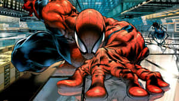

Spider-sense
Stay awake to the world around you. Notice who needs a hand.
01 Queens, New York · 1962
He was a kid who got lucky. Then he learned that luck is only the beginning of the story.

SPIDEY02 The origin story
A hero is made
one choice at a time.
Peter Parker was a bright, quiet teenager from Queens. One bite changed his reflexes. One loss changed his direction.
Created by Stan Lee and Steve Ditko, Spider-Man first swung into Amazing Fantasy #15 in August 1962. The idea was simple: give a teenager the powers of a hero, then keep the awkwardness, bills, doubt, and heart of a real person.
See what stayed with himThe first swing — Amazing Fantasy #15 introduces a different kind of hero.
A world opens up — The Amazing Spider-Man gives Peter a title of his own.
The story keeps moving — New city. New suit. Same responsibility.
03 The code
The suit helps.
The choice matters.
The hard part is deciding what to do with it when nobody is watching. That is the thread running through every version of Spider-Man.
Stay awake to the world around you. Notice who needs a hand.
Every gift carries a weight. Carry it anyway.
Fall seven times. Find the next ledge. Swing again.
04 The files
A city this big always has another story hiding above the street. Tap a frame to take a closer look.
In every version, in every universe, the story comes back to the same thing: with great power comes great responsibility.— the line that started it all